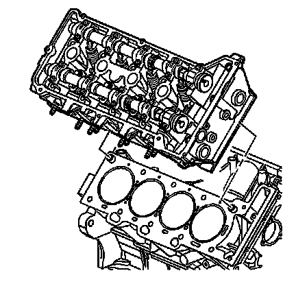

Cylinder Head Replacement - Right
Cylinder Head Replacement - Right Side
Removal Procedure
1. Remove the following subassemblies:
* The right exhaust manifold-Refer to Exhaust Manifold Replacement - Right Side (V8 and LHD) (Exhaust Manifold Replacement - Right Side (V8 and LHD)) .
* The water crossover-Refer to Water Outlet Housing Replacement (LY7, LLT) (Service and Repair)Water Outlet Housing Replacement (LH2 - Gas, 8 Cylinder, 4.6L, SFI, V8, DOHC, HO) (Service and Repair) .
* The intake manifold-Refer to Intake Manifold Replacement (Service and Repair) .
* The right secondary camshaft drive chain-Refer to Secondary Camshaft Drive Chain Replacement - Right Side (Secondary Camshaft Drive Chain Replacement - Right) .
* The right camshaft-Refer to Camshaft Replacement - Right Side (Camshaft Replacement - Right Side) .

2. Remove the right cylinder head. Make sure that no dowel guide pins are stuck in the cylinder head. Refer to Cylinder Head Removal - Right Side (Overhaul) .
3. Disassemble the right cylinder head. Refer to Cylinder Head Disassemble (Overhaul) .
4. Clean and inspect the cylinder head. Refer to Cylinder Head Cleaning and Inspection (Overhaul) .
5. Assemble the right cylinder head. Refer to Cylinder Head Assemble (Overhaul) .
Installation Procedure
1. Install the right cylinder head. Refer to Cylinder Head Installation - Right Side (Overhaul) .
2. Install the following subassemblies:
* The right camshaft-Refer to Camshaft Replacement - Right Side (Camshaft Replacement - Right Side) .
* The right secondary camshaft drive chain-Refer to Secondary Camshaft Drive Chain Replacement - Right Side (Secondary Camshaft Drive Chain Replacement - Right) .
* The intake manifold-Refer to Intake Manifold Replacement (Service and Repair) .
* The water crossover-Refer to Water Outlet Housing Replacement (LY7, LLT) (Service and Repair)Water Outlet Housing Replacement (LH2 - Gas, 8 Cylinder, 4.6L, SFI, V8, DOHC, HO) (Service and Repair) .
* The right exhaust manifold-Refer to Exhaust Manifold Replacement - Right Side (V8 and LHD) (Exhaust Manifold Replacement - Right Side (V8 and LHD)) .